Title: Strong Association of Insulin-Like Growth Factor 1 Receptor Expression and Histologic Subtype and Grade in Penile Squamous Cell Carcinomas: A Tissue Microarray Study of 112 Cases
Authors’ list: Sheila F. Faraj, M.D. (1); Nilda Gonzalez-Roibon, M.D. (1,4); Enrico Munari, M.D. (1); George J. Netto, M.D. (1,2,3); Alcides Chaux, M.D. (1,5)
Authors’ Affiliations: (1) Department of Pathology, Johns Hopkins Medical Institutions, Baltimore, MD; (2) Department of Urology, Johns Hopkins Medical Institutions, Baltimore, MD; (3) Department of Oncology, Johns Hopkins Medical Institutions, Baltimore, MD; (4) Departamento de Anatomía y Fisiología Patológica, Facultad de Medicina, Universidad Nacional del Nordeste, Corrientes, Argentina; (5) Centro para el Desarrollo de la Investigación Científica (CEDIC), Paraguay.
Last update: 2017-02-24
The insulin-like growth factor-1 receptor (IGFR1) is a tyrosine kinase receptor that plays a key role in cell growth and transformation. IGFR1 is overexpressed in several tumors, but its expression status has been described in penile carcinomas in only a few previous studies. IGFR1 inhibitors have been developed and are currently being tested in clinical trials. This study evaluates IGFR1 immunohistochemical expression in a set of invasive penile squamous cell carcinomas (SCC) and its association with pathologic features.
# Setting up global environment
library(knitr)
opts_chunk$set(
warning = FALSE,
message = FALSE,
fig.align = "center")
The present study includes tissue samples from 112 patients with invasive SCC of the penis from the consultation files of one of the authors (AC). Cases were selected based on availability of formalin-fixed, paraffin-embedded tissue blocks. From each case, 1–4 blocks were selected. Four tissue microarrays (TMAs) were built at the Johns Hopkins TMA Lab Core (Baltimore, MD) using a previously described procedure [1]. Three tissue cores of 1 mm each were obtained per block, giving a representation of 3–12 TMA spots per case.
# Opening the dataset
library(foreign)
DF <- read.dta("../data/igf1r_penile_dataset.dta")
# Selecting the variables that will be used for analysis
DF <- DF[, c(1,3,4,6:8)]
# Recoding variables for proper statistical handling
library(dplyr)
DF <- DF %>%
mutate (grade = factor(
grade, labels = c("Grade 1", "Grade 2", "Grade 3"))
) %>%
mutate(hpv = factor(
ifelse(hpv == "positive", "HPV negative", "HPV positive")
)
) %>%
mutate(memb = factor(
memb, labels = c("0", "1+", "2+", "3+")
)
) %>%
rename(hpv_pcr = hpv)
# Fixing labels for proper display in plots
library(stringr)
DF$subtype2 <- DF$subtype2 %>%
str_replace_all(" SCC", "") %>%
factor()
# Sorting histologic subtypes by decreasing frequency
DF$subtype2 <- reorder(DF$subtype2, -table(DF$subtype2)[DF$subtype2])
# HPV by ISH dataset
library(forcats)
DF_HPV <- read.csv("../data/tma852-855_dataset.csv") %>%
filter(caseid != "control") %>%
select(caseid, hpv_ish) %>%
group_by(caseid) %>%
summarize(
hpv_ish = max(as.numeric(as.character(hpv_ish)), na.rm = TRUE)
) %>%
mutate(
hpv_ish = fct_recode(
factor(hpv_ish),
"HPV positive" = "1",
"HPV negative" = "0",
NULL = "-Inf"
)
)
# Merging datasets
DF <- merge(DF, DF_HPV, by = "caseid")
# Defining HPV status
DF$hpv_status[DF$hpv_pcr == "HPV positive" | DF$hpv_ish == "HPV positive"] <- "HPV positive"
DF$hpv_status[DF$hpv_pcr == "HPV negative" & DF$hpv_ish == "HPV negative"] <- "HPV negative"
DF$hpv_status[DF$hpv_ish == "HPV negative"] <- "HPV negative"
DF$hpv_status <- factor(DF$hpv_status, levels = c("HPV negative", "HPV positive"), ordered = TRUE)
Pathologic features were evaluated using H&E-stained sections. Histologic subtyping was carried out in whole tissue sections using previously published morphologic criteria [2]. Histologic grading was carried out spot by spot using previously published and validated criteria [3]. For statistical analysis, the highest grade at the TMA spots was assigned as the histologic grade of the case. Figure 1 shows the morphologic criteria used for histologic grading.
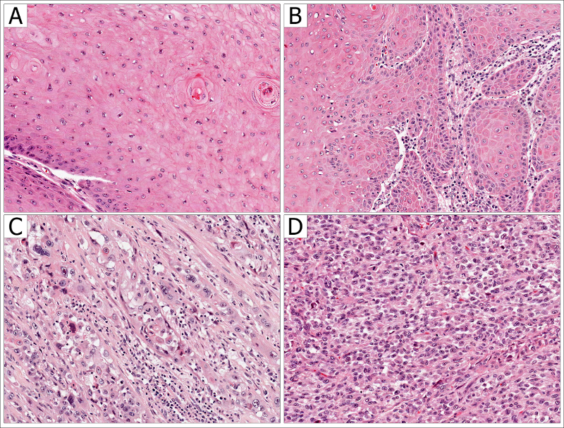
Figure 1: Histologic grade in penile squamous cell carcinoma (SCC) A) Grade 1 SCC composed of tumor cells almost indistinguishable from normal squamous cells and minimal cytologic and architectural atypia. B) Grade 2 SCC composed of tumor cells with more cytologic atypias althought squamous maturation is retained. C) and D) Grade 3 SCC with tumor cells with evident nuclear atypias and architectural disorganization.
HPV status was established by either polymerase chain reaction (PCR) or in situ hybridization (ISH).
A case was classified as “HPV positive” if any of the detection methods was positive. Conversely, a case was classified as “HPV negative” if both methods were negative.
IGF1R expression was evaluated by immunohistochemistry on 5 \(\mu\)m TMA sections using a monoclonal rabbit (clone G11) anti-IGF1R antibody (Catalog #790-4346, Ventana Medical Systems, Inc., Tucson, AZ). Only membranous staining was considered as indicative of IGF1R expression. Evaluation of IGF1R expression was carried out by 2 authors (SFF and GJN) blindly from pathologic features and HPV status.
IGF1R expression was evaluated using 2 different approaches. The first approach consisted of a quantitative H-score system in which IGF1R expression was estimated as the sum of the products of the intensity (0 for negative, 1 for weakly positive, 2 for moderately positive, and 3 for strongly positive) multiplied by the extent of the stain (0% to 100%), obtaining a value ranging from 0 to 300. Estimations of the H-score were made spot by spot. Figure 2 shows examples of staining intensity used for scoring the spots. For each case, the pooled median of the TMA H-scores was used for statistical analyses.
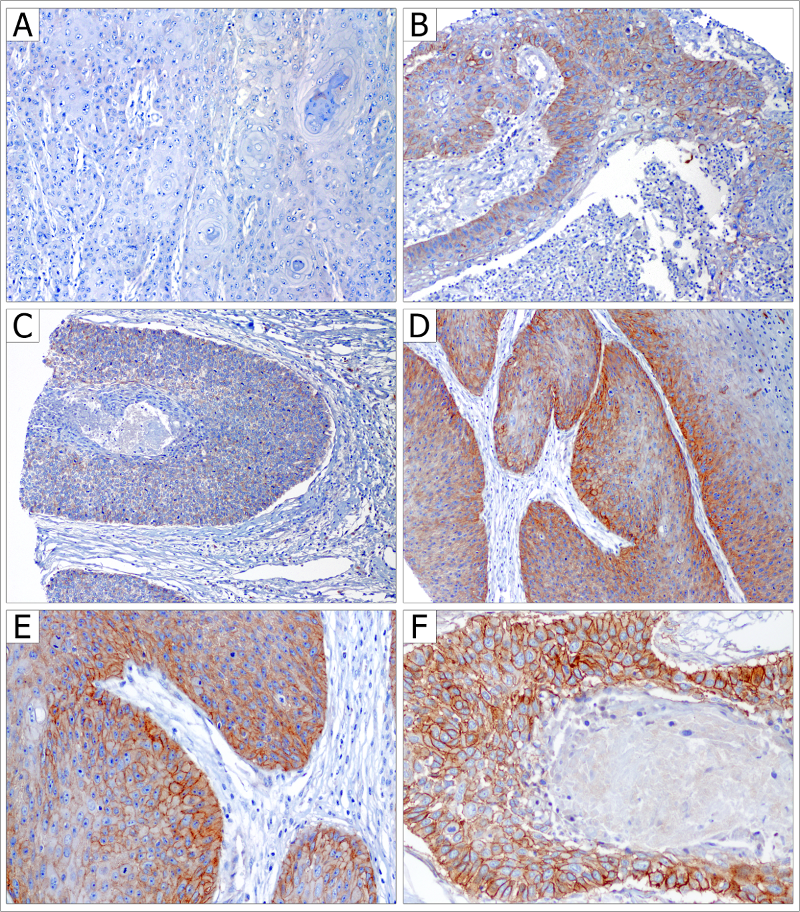
Figure 2: Immunohistochemical Expression of ARID1A in Penile Carcinomas. Only nuclear positivity was considered as indicative of ARID1A expression. A–B) Negative ARID1A expression. C–D) Moderate ARID1A expression. E–F) Strong ARID1A expression.
The second approach for evaluating IGF1R expression consisted of a semi-quantitative score system similar to the standardized scoring system used for evaluating HER2 immunohistochemical expression. TMA spots were classified in any of the following categories: 0, no reactivity or membranous reactivity in < 10% of tumor cells; 1+, faint or barely perceptible membranous partial reactivity in 10% or more of tumors cells; 2+, weak to moderate complete membranous reactivity in 10% or more of tumor cells; 3+, strong complete membranous reactivity in 10% or more of tumor cells. For each case, the highest category obtained at any TMA spot was used for statistical analyses.
IGF1R expression was compared by histologic subtype, histologic grade, and HPV status using either the Kruskal-Wallis equality-of-populations rank test (quantitative score) or the Fisher’s exact test (semi-quantitative score). A 2-tailed P < 0.05 was required for statistical significance. Data were analyzed and plots were generated using R version 3.3.2 (2016-10-31) [5].
# Loading ggplot2 scripts for plots
source("../R/gplots.R")
# Loading functions for nice tables
source("../R/nice_tables.R")
# Updated scripts
scripts <- list.files(path = "~/Dropbox/R-scripts/", pattern = "*.R$", full.names = TRUE)
for (script in scripts) { source(script) }In this subsection we describe the pathologic features of our cases. We also summatize IGF1R expression by H-scores and by levels. First, we describe the pathologic features of our cases using bar plots, including histologic subtypes, histologic grades, and HPV status. Second, we summarize IGF1R expression by H-scores using histograms and by levels using bar plots. As mentioned before, H-scores correspond to median values from all TMA spots belonging to each particular case. Also, IGF1R levels correspond to the highest level observed at any spot for each particular case.
x <- DF$subtype2
tbl_nice(x)| No. Cases (%) | |
|---|---|
| Usual | 48 (43) |
| Warty-Basaloid | 24 (21) |
| Warty | 17 (15) |
| Basaloid | 11 (10) |
| Papillary | 9 (8) |
| Other Subtypes | 3 (3) |
g_barplot(x)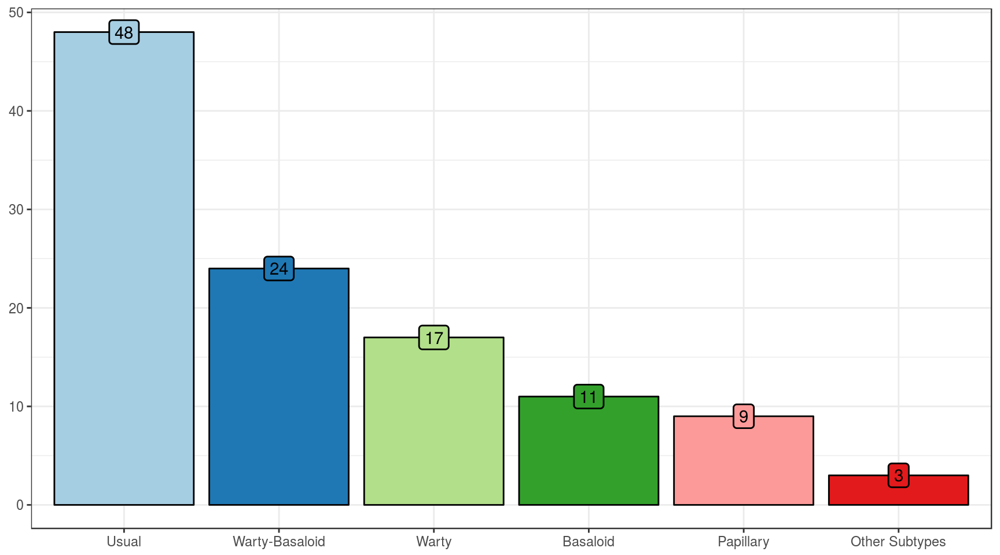
x <- DF$grade
tbl_nice(x)| No. Cases (%) | |
|---|---|
| Grade 1 | 5 (4) |
| Grade 2 | 41 (37) |
| Grade 3 | 66 (59) |
g_barplot(x)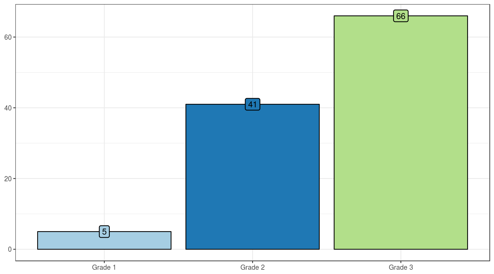
x <- DF$hpv_status
tbl_nice(x)| No. Cases (%) | |
|---|---|
| HPV negative | 78 (70) |
| HPV positive | 33 (30) |
g_barplot(x)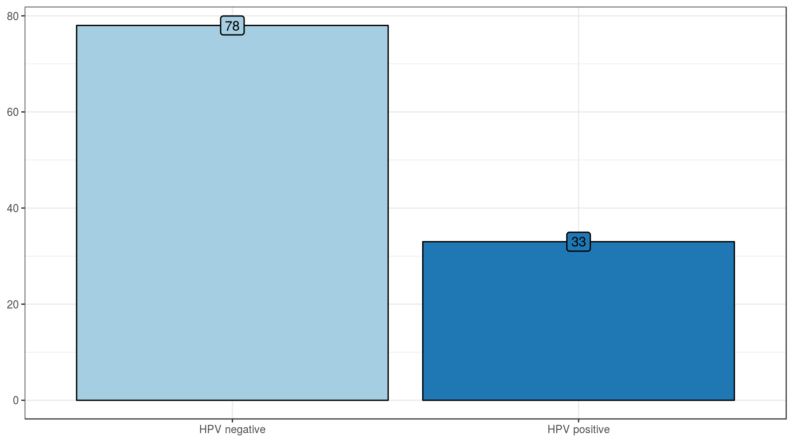
x <- DF$hscore
tbl_nice(x)| Values | |
|---|---|
| Mean | 38 |
| Standard deviation | 48.3 |
| Median | 22.5 |
| Interquartile range | 51.4 |
| Mininum | 0 |
| Maximum | 212 |
g_histogram(x, bin = 20, max_break = 220)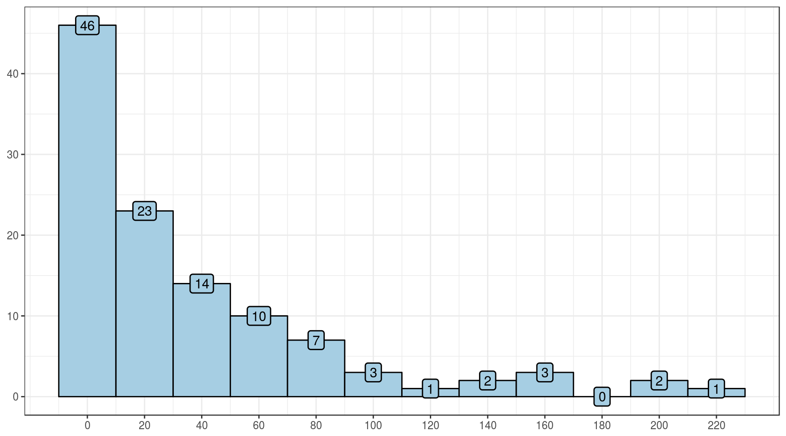
g_density(x)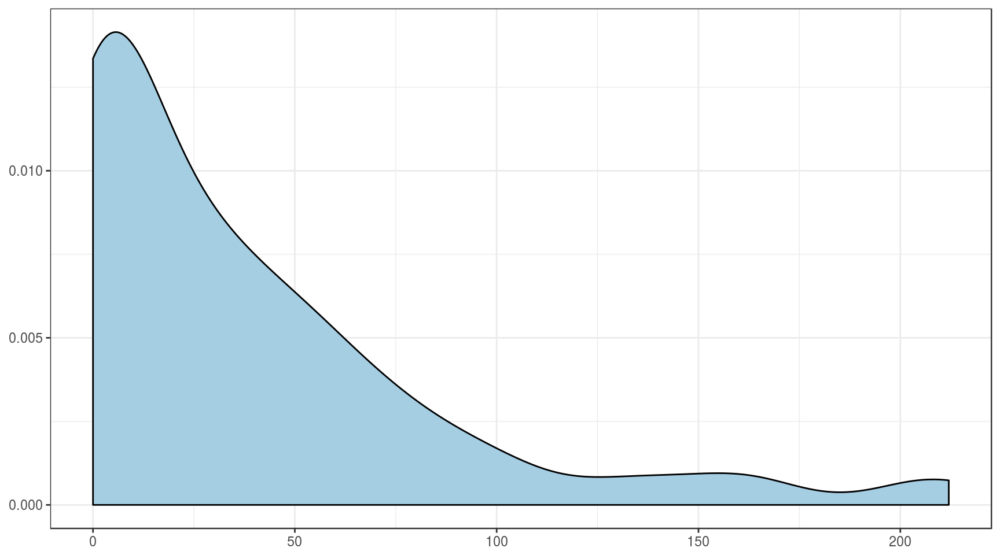
x <- DF$memb
tbl_nice(x)| No. Cases (%) | |
|---|---|
| 0 | 37 (33) |
| 1+ | 52 (46) |
| 2+ | 16 (14) |
| 3+ | 7 (6) |
g_barplot(x)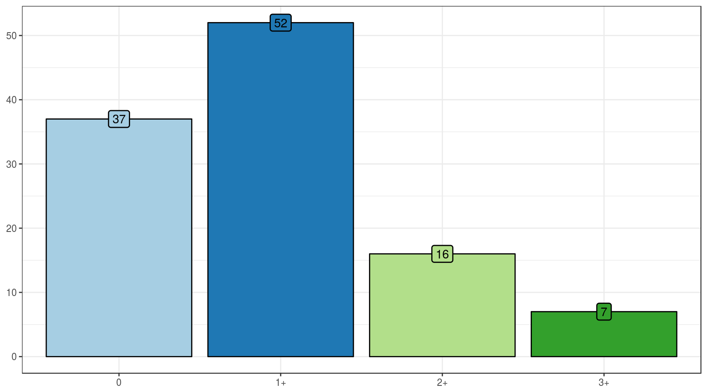
In this subsection we evaluate the association of H-scores and levels of IGF1R expression by histologic subtypes, histologic grades, and HPV status.
x <- DF$hscore
y <- DF$subtype2
tbl_nice(x, y)| Usual | Warty-Basaloid | Warty | Basaloid | Papillary | Other Subtypes | |
|---|---|---|---|---|---|---|
| Mean | 43.0 | 46.4 | 30 | 48.4 | 0.4 | 11.5 |
| Standard deviation | 58.3 | 42.2 | 36 | 40.4 | 1.0 | 16.2 |
| Median | 20.0 | 40.0 | 10 | 40.0 | 0.0 | 4.5 |
| Interquartile range | 48.2 | 58.8 | 55 | 27.5 | 0.0 | 15.0 |
| Minimum | 0.0 | 0.0 | 0 | 0.0 | 0.0 | 0.0 |
| Maximum | 212.0 | 160.0 | 100 | 135.0 | 3.0 | 30.0 |
tbl_test(x, y)| Value | |
|---|---|
| Statistic | 18.26 |
| Parameter | 5 |
| P statistic | 0.0026 |
g2_nice(x, y)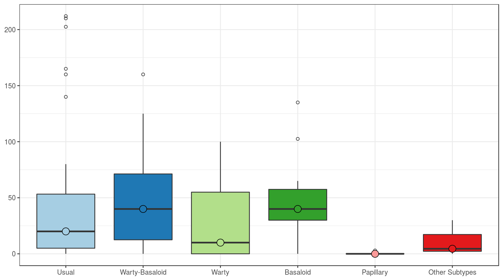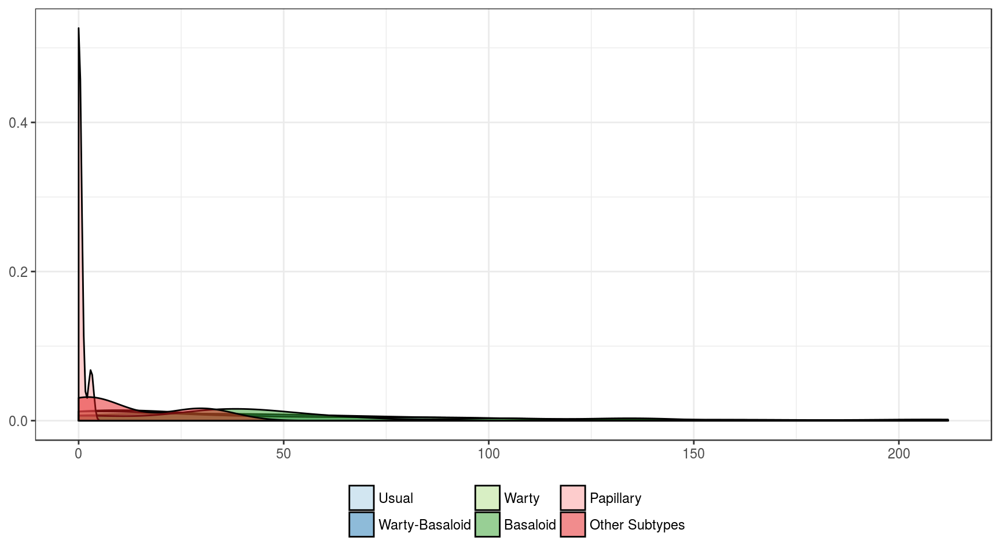
y <- DF$grade
tbl_nice(x, y)| Grade 1 | Grade 2 | Grade 3 | |
|---|---|---|---|
| Mean | 3.9 | 26.6 | 47.7 |
| Standard deviation | 6.5 | 45.7 | 49.2 |
| Median | 0.0 | 5.0 | 32.5 |
| Interquartile range | 4.5 | 30.0 | 52.6 |
| Minimum | 0.0 | 0.0 | 0.0 |
| Maximum | 15.0 | 210.0 | 212.0 |
tbl_test(x, y)| Value | |
|---|---|
| Statistic | 15.13 |
| Parameter | 2 |
| P statistic | 0.00052 |
g2_nice(x, y)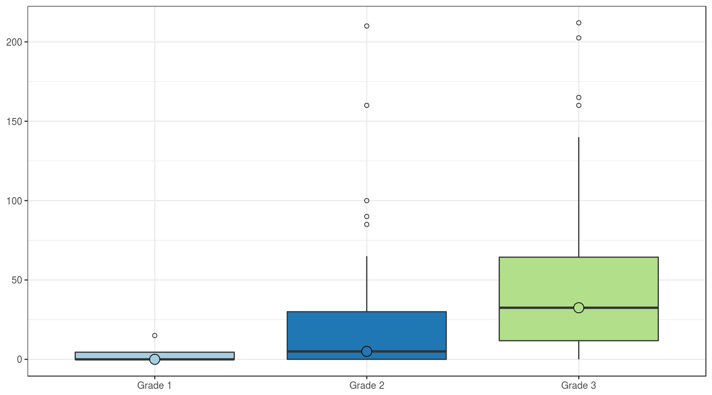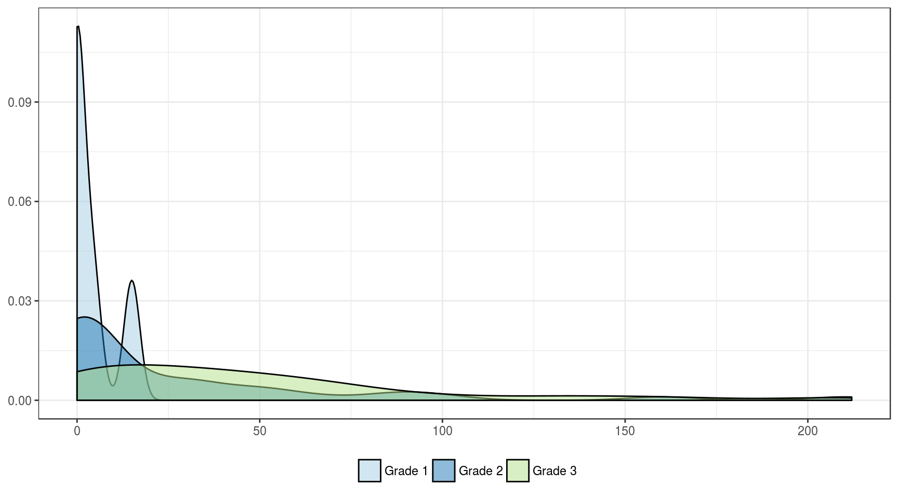
y <- DF$hpv_status
tbl_nice(x, y)| HPV negative | HPV positive | |
|---|---|---|
| Mean | 35.4 | 45.4 |
| Standard deviation | 48.8 | 47.2 |
| Median | 20.0 | 40.0 |
| Interquartile range | 50.0 | 65.0 |
| Minimum | 0.0 | 0.0 |
| Maximum | 212.0 | 202.5 |
tbl_test(x, y)| Value | |
|---|---|
| U-statistic | 1064 |
| P statistic | 1.5e-01 |
g2_nice(x, y)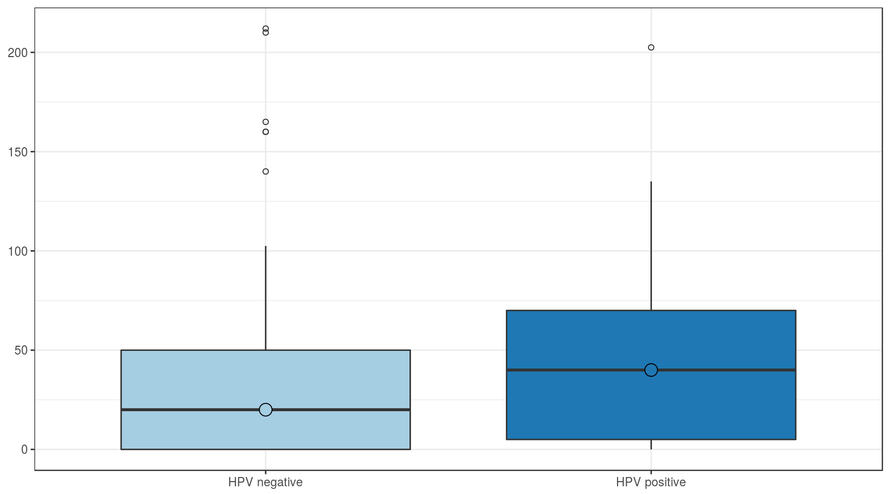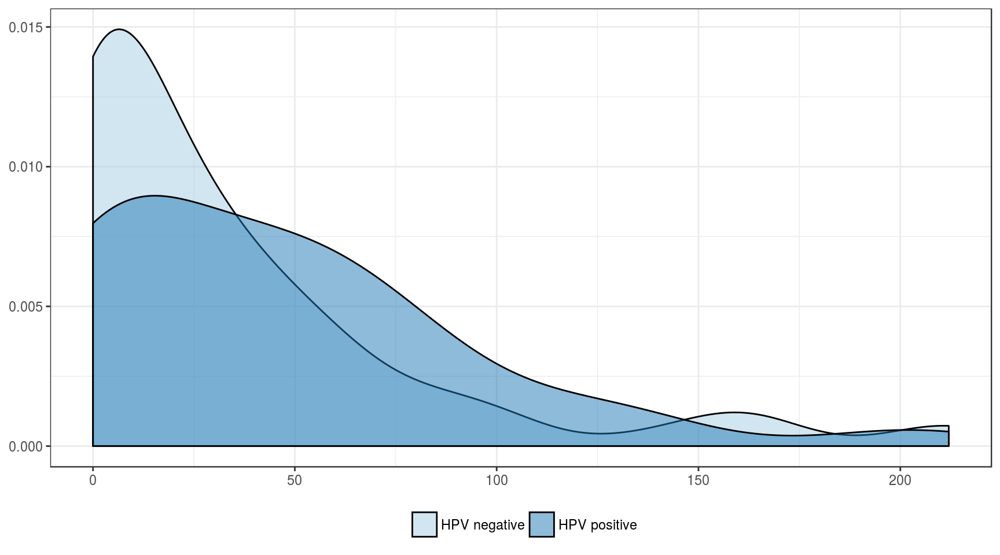
x <- DF$memb
y <- DF$subtype2
tbl_nice(x, y)| Usual (%) | Warty-Basaloid (%) | Warty (%) | Basaloid (%) | Papillary (%) | Other Subtypes (%) | |
|---|---|---|---|---|---|---|
| 0 | 13 (27.1) | 5 (20.8) | 6 (35.3) | 2 (18.2) | 9 (100) | 2 (66.7) |
| 1+ | 24 (50) | 11 (45.8) | 9 (52.9) | 7 (63.6) | 0 (0) | 1 (33.3) |
| 2+ | 6 (12.5) | 7 (29.2) | 2 (11.8) | 1 (9.1) | 0 (0) | 0 (0) |
| 3+ | 5 (10.4) | 1 (4.2) | 0 (0) | 1 (9.1) | 0 (0) | 0 (0) |
tbl_test(x, y)| Value | |
|---|---|
| Statistic | 30.16 |
| Parameter | 15 |
| P statistic | 0.011 |
g2_nice(x, y)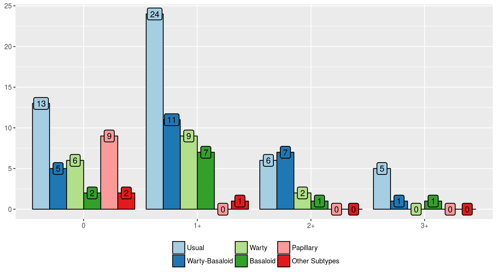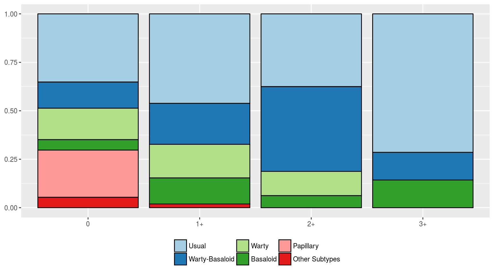
y <- DF$grade
tbl_nice(x, y)| Grade 1 (%) | Grade 2 (%) | Grade 3 (%) | |
|---|---|---|---|
| 0 | 4 (80) | 20 (48.8) | 13 (19.7) |
| 1+ | 1 (20) | 15 (36.6) | 36 (54.5) |
| 2+ | 0 (0) | 5 (12.2) | 11 (16.7) |
| 3+ | 0 (0) | 1 (2.4) | 6 (9.1) |
tbl_test(x, y)| Value | |
|---|---|
| Statistic | 15.73 |
| Parameter | 6 |
| P statistic | 0.015 |
g2_nice(x, y)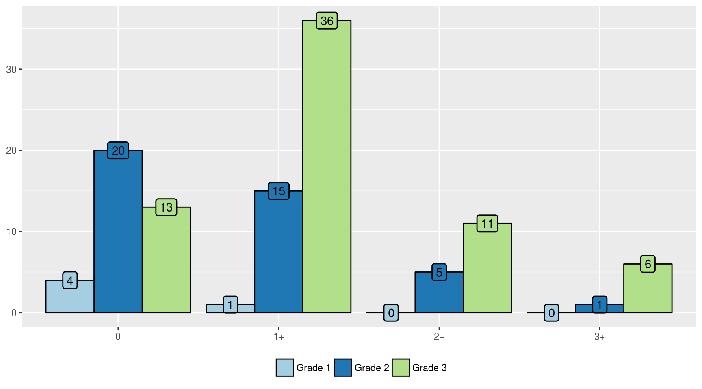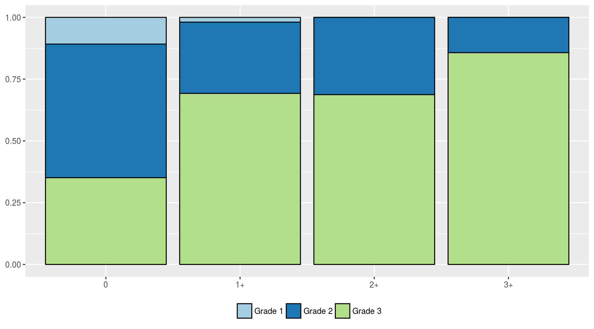
y <- DF$hpv_status
tbl_nice(x, y)| HPV negative (%) | HPV positive (%) | |
|---|---|---|
| 0 | 27 (34.6) | 9 (27.3) |
| 1+ | 41 (52.6) | 11 (33.3) |
| 2+ | 6 (7.7) | 10 (30.3) |
| 3+ | 4 (5.1) | 3 (9.1) |
tbl_test(x, y)| Value | |
|---|---|
| Statistic | 11.02 |
| Parameter | 3 |
| P statistic | 0.012 |
g2_nice(x, y)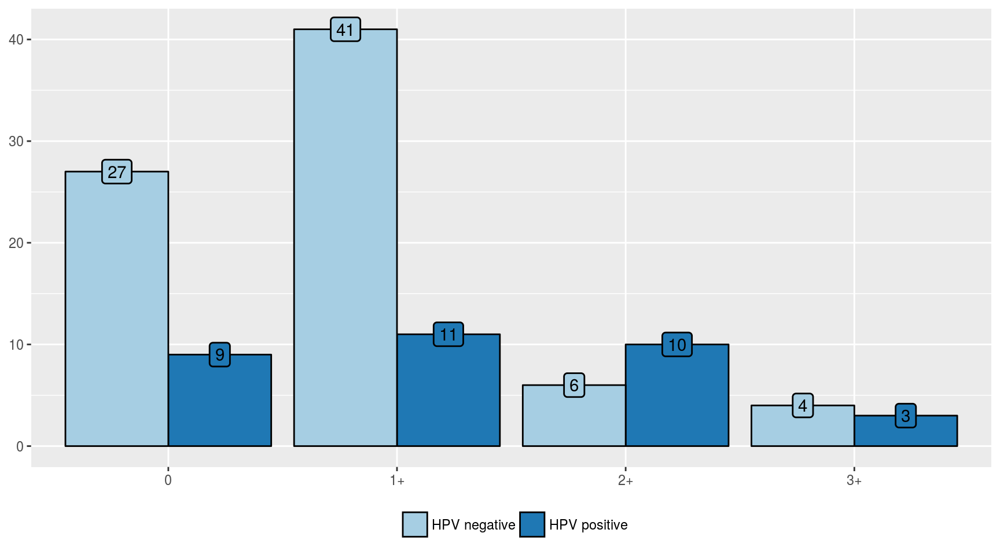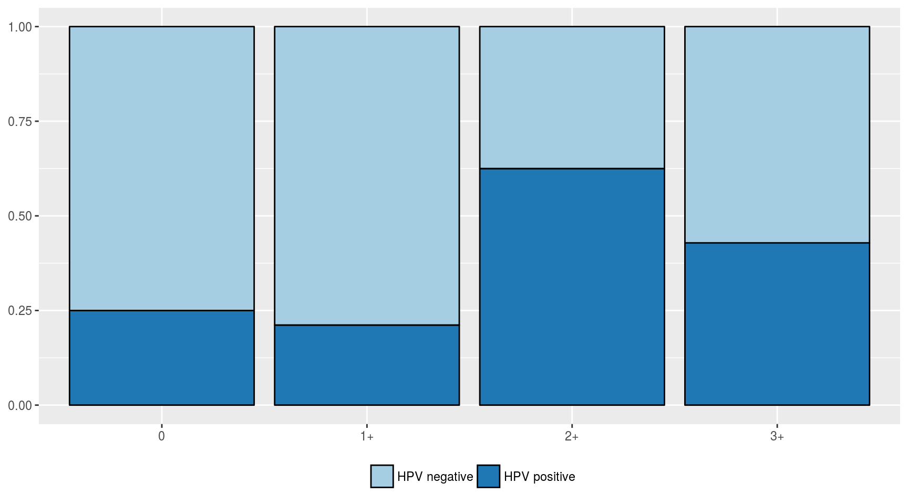
IGF1R is expressed in about two-thirds of our penile SCC cases, showing association with histologic subtype, histologic grade, and HPV status. Our results suggest that immunohistochemical expression of IGF1R may have prognostic relevance and that IGF1R inhibitors could be useful in treating patients with penile SCC.
We acknowledge the outstanding work of Helen Fedor and Marcella Southerland, from the TMA Lab Core at the Johns Hopkins University, in building the TMAs for the study.
This study was partially supported by the Johns Hopkins Medicine – Patana Fund for Research. Dr. Alcides Chaux was partially supported by an award granted by the National Council of Science and Technology (CONACYT) dependent of the Presidency of the Republic of Paraguay, as an Active Researcher of Level 2 of the National Incentive Program for Researchers (PRONII).
[1] Fedor HL, De Marzo AM. Practical methods for tissue microarray construction. Methods Mol Med 2005;103:89–101.
[2] Chaux A, Cubilla AL. Advances in the pathology of penile carcinomas. Hum Pathol 2012;43:771–89.
[3] Chaux A, Torres J, Pfannl R, et al. Histologic grade in penile squamous cell carcinoma: Visual estimation versus digital measurement of proportions of grades, adverse prognosis with any proportion of grade 3 and correlation of a gleason-like system with nodal metastasis. Am J Surg Pathol 2009;33:1042–8.
[4] Cubilla AL, Lloveras B, Alejo M, et al. The basaloid cell is the best tissue marker for human papillomavirus in invasive penile squamous cell carcinoma: A study of 202 cases from paraguay. Am J Surg Pathol 2010;34:104–14.
[5] R Core Team. R: A language and environment for statistical computing. Vienna, Austria: R Foundation for Statistical Computing; 2014.